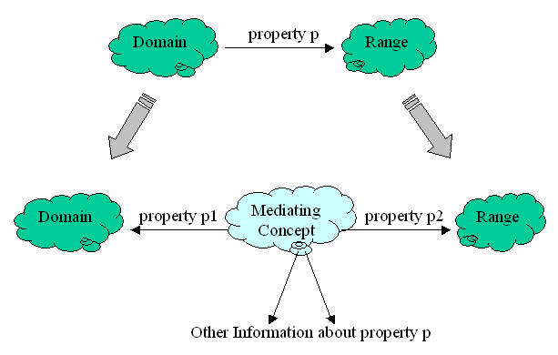
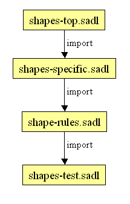
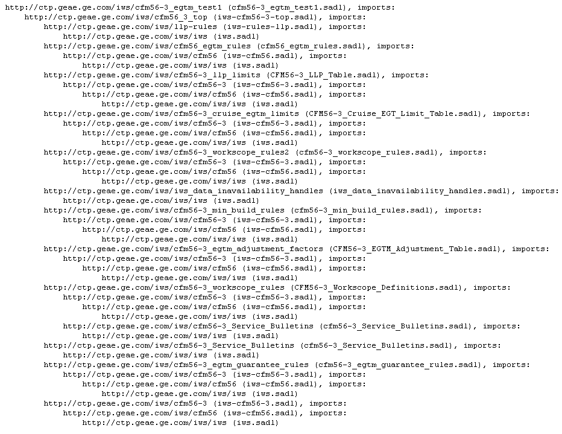

Figure 5: Differentiae Dividing Class into Two Subclasses
The OWL language provides us with a set of properties. For example, the subset property that relates one class (set) to another is an OWL property. (We will not distinguish for the moment whether a property comes from the OWL language or from the RDF/RDFS language.) Whenever all of the members of a class (set) are also members of another class (set), the first set is a subset of the second set.
The OWL language defines other properties that are useful in modeling. Sometimes we will want to define one of our domain properties to be a sub-property of one of these OWL properties so that OWL implications will be inherited. These properties include:
While all of these will be supported in SADL 2, only functional property is supported in SADL 1.
Syntax:
Concept SADL Syntax (Template) Examples The definition of a functional property in SADL new_Property describes Domain_Name has a single value of type Range_Name. weight describes Rock has a single value of type float.
gender describes Person has a single value of type Gender.Functional property definition combined with class definition. New_Name is a type of Existing_Name, described by new_Property with values of type Range_Name. PetRock is a type of Rock, described by name with a single value of type string.
Person is a top-level class, described by gender with a single value of type Gender.
Exercise 4: a) Modify the model built in Exercise 2 (the model of LivingThing, Mammal, Dog, etc.) to use functional properties where appropriate. b) Give one of the instances multiple values of a functional property, then rebuild the file. Look at the build output in the console window.
A class restriction is used to further refine the definition of the class. It is really a restriction on a specified property of the class. The kinds of restrictions include, using the OWL language keyword to name them:
These restriction types can be combined, meaning that a class can have multiple restrictions, even on the same property. For example, if a class has both a someValuesFrom and an allValuesFrom restriction on the same property with the same given class, then any instance of the restricted class must have at least one value of the property from the given class and can't have values from any other class.
It is also possible to combine an unnamed enumeration class with an allValuesFrom restriction in a useful way, either with an enumeration of instances or an enumeration of data values. Examples of this are given in the last row of the syntax table below. In the first example of the last row, if it is assumed that the instances Excellent, Good, Average, and Poor belong to a class C which has other member, then the enumeration here defines an unnamed and more restrictive class (a proper subclass of C) which is those values that rating of Professor can have. In the second example of the last row, "Male" and "Female" are just primitive data strings and the range of sex is string.
Syntax:
Restriction SADL Syntax (Template) Examples someValuesFrom existing_Property of Domain_Name has at least one value of type Range_Name. teaches of Professor has at least one value of type College_Student. allValuesFrom existing_Property of Domain_Name only has values of type Range_Name. teaches of Professor only has values of type College_Student. hasValue existing_Property of Domain_Name always has value Value. rating of GoodProfessor always has value Good. cardinality existing_Property of Domain_Name has exactly NUMBER values. teaches of Professor has exactly 30 values. minCardinality existing_Property of Domain_Name has at least NUMBER values. teaches of Professor has at least 1 values. maxCardinality existing_Property of Domain_Name has at most NUMBER values. teaches of Professor has at most 500 values. allValuesFrom with enumerated class no template rating of Professor must be one of {Excellent, Good, Average, Poor}.
sex of Person must be one of {"Male", "Female"}.
Exercise 5: What is the difference between defining a property as a functional property and using a maxCardinality restriction of 1 on the property?
Class restrictions specify the necessary conditions--conditions required of a member of the class. Such conditions can be seen as constraints that might be used for model validation and consistency checking or for capturing information useful for, for example, creating a model-driven user interface. Necessary and sufficient conditions go further by saying that not only are the restrictive conditions necessary for class membership, but they are sufficient to infer that an instance meeting those conditions is a member of the class.
Syntax:
Concept SADL Syntax (Template) Examples necessary and sufficient conditions no template currently a Person is a Woman only if gender always has value Female.
a Woman is a Mother only if child has at least 1 values.
a Person is a Mother only if child has at least 1 values, gender always has value Female.
In computer science, reification is the giving of an "handle" (a unique identifier) to something to make it an addressable object. In knowledge representation, reification is the representation of a statement (assertion) in such a way that it, in turn, can be used in other statements--statements about the statement. A natural language equivalent is the use of a noun clause as the object of a sentence. For example, "John is six feet tall." is a statement where as "Mary reports that John is six feet tall." is the reification of the statement.
Ideally we would like a classification scheme to create sets, at any particular level, which span all the instances of interest but which do not overlap. Consider for example the class of all trees. If we are to divide the Tree class into subclasses, we would like to identify differentiae (the properties, features, or attributes that distinguish one subclass from another) that don't leave some trees belonging to multiple sibling subclasses.
Figure 5: Differentiae Dividing Class into Two Subclasses
Consider for a moment a model in which we have defined the classes Person, MalePerson, FemalePerson. If, in our small universe, we have the following instances of the class Person: Mike, Julie, James, Greg, Mary, Sue, John, and Betty, then we might expect membership in the subclasses MalePerson and FemalePerson to be as shown in the table below:
Class Name Members of Class MalePerson Mike, James, Greg, John FemalePerson Julie, Mary, Sue, Betty
So far so good--no overlap between MalePerson and FemalePerson. However, suppose that we wish to build a genealogical model and decide that Mother and Father are useful classes. Now some of the instances of MalePerson may also be instances of Father, and some of the instances of FemalePerson may also be instances of Mother, even though they are all subclasses of Person..
Exercise 6: What is the relationship between Mother and FemalePerson, between Father and MalePerson?
The American philosopher Charles Sanders Peirce (1839 - 1914) suggested three ways of classifying things (as interpreted by John Sowa). He called these firstness, secondness, and thirdness. Sowa also called them Form, Role, and Mediation. We'll use these latter terms.
As a general principle (according to Crapo--others would disagree), one should model first by Form, then by Role.
Exercise 7: Build a small genealogical model defining at least the classes Person, MalePerson, FemalePerson, Husband, Wife, Mother, Father, and Child. Properties might include spouse, husband, wife, child, father, mother, son, and daughter. Create some instance data.
Exercise 8: Consider how you would modify your model built in exercise 7 to capture the time and place a Person was born and the time and place that a Husband and Wife were married.
Continuing our list of modeling first by Form, then by Role from above:

Figure 6: Adding a Mediating Concept to a Model
Figure 7 provides a concrete example of using Mediation in creating model classes.

Figure 7: Example of Adding a Mediating Concept to a Model
Classification of instances into the role classes (Husband, Wife--not shown in Figure 7), if needed, can be done either by necessary and sufficient conditions or by rules (to be covered later). Note also that if the direct relationship (property p in Figure 6, property wife in Figure 7) is still useful, it can be inferred from the mediated relationships.
Exercise 9: Modify your model of Exercise 7 to allow addition of the location and time of marriages and births. Add some instance data.
Every SADL file contains an initial statement establishing the model's name. This name is a Uniform Resource Identifier (URI) and should comply with XML namespace requirements. Note that a URI does not necessarily represent an actual location from which data can be retrieved. The purpose of giving a model a namespace is to make the uniqueness of names a localized problem. Names only need to be unique within a namespace. Use of the same name in another namespace is not an issue as the two names are distinguishable and independent.
Dividing a model into pieces is desirable for several reasons.
Of course one must be able to connect the pieces. In OWL and in SADL, this is done with the "import" statement. When a model, in OWL or SADL, imports another model, all of the concepts of the imported model (and any models it imports, etc.) are available for use in the importing model. Consider the ShapesDemo SADL project:
Model Name Selected Model Content shapes-top.sadl uri
"http://sadl.imp/shapes_top".Shape is a top-level class,
described by area with values of type float.shapes-specific.sadl uri
"http://sadl.imp/shapes_specific".
import "file://shapes-top.sadl" as shapes-top.Circle
is a type of Shape,
described by radius with values of type float.Rectangle
is a type of Shape,
described by height with values of type float,
described by width with values of type float.shape-rules.sadl uri
"http://sadl.imp/shape_rules".import
"file://shapes-specific.sadl" as shapes-specific.shapes-test.sadl uri
"http://sadl.imp/shapes_test" .
import "file://shape-rules.sadl" as shape-rules.MyCircle
is a Circle, has radius 3.5 .MyRect
is a Rectangle, has height 3.5, has width 4.5.Test
: MyCircle has area 38.48 .
Figure 7: Import Hierarchy of ShapesDemo
It is worth noting that we often use the term model in two ways.
A problem domain modeled in SADL will normally have high-level concepts, possibly useful in other solutions, at the top of the model hierarchy and more specific concepts at lower levels are layers. A specific use case or test case (instance data) will form a leaf. The import hierarchy for any particular SADL file can be obtained by right-clicking on the file name in the Navigator and selecting SADL Actions -> Show Imports/Versions. For example:
http://sadl.imp/shapes_test (shapes-test.sadl, Version $Revision: 1.1 $ Last modified on $Date: 2013/08/06 17:06:25 $), imports:
http://sadl.imp/shape_rules (shape-rules.sadl, Version $Revision: 1.1 $ Last modified on $Date: 2013/08/06 17:06:25 $), imports:
http://sadl.imp/shapes_specific (shapes-specific.sadl, Version $Revision: 1.1 $ Last modified on $Date: 2010/02/01 22:15:21 $), imports:
http://sadl.imp/shapes_top (shapes-top.sadl, Version $Revision: 1.1 $ Last modified on $Date: 2013/08/06 17:06:25 $)
Note that real-world models can be quite complex and proper modularization is important. Consider this build output from Aviation's Digital Joint Spec Tool (DJST):
Build complete: 197 sadl files processed containing 143 classes, 82 properties, 670 instances, and 1577 rules.
Here's an Imports/Versions hierarchy for one of the DJST test cases (version information removed for simplicity):

Exercise 10: Refactor your model from Exercise 9 by separating the t-box from the a-box. Create a new folder containing these revised model. Don't forget to give your new models unique names (URIs).
Annotations provide information about a model but are not part of the model itself (as viewed by some reasoners). In other words, a reasoner would be expected to ignore annotations. OWL has a number of annotation properties. SADL currently implements two OWL annotation properties.
Syntax:
Annotation Example rdfs:label BYU (alias "Brigham Young University") is a University. // rdfs:label rdfs:comment Green has comment "This is Jane's favorite color". // rdfs:comment
In addition, SADL allows you to define your own annotation properties. Note that annotation properties do not have a specified domain and range. Below is an example of the declaration of an annotation property followed by its use in assigning an annotation to a property.
display is a type of annotation. // Note that an annotation cannot have a specified domain and range.
age has display "Never". // This annotates the age property with value of display "Never"; perhaps used to drive a user-interface
Many of the nodes in our mental ontologies do not have a name. Rather, they are identified by their relationships to other nodes in the graph.
Similarly, many of the nodes in our a-box (instance data) will not have explicit names unless we are forced to create them. (Remember "MarthaGeorgeMarriage"?) Nodes that do not have a specified name (URI) are called blank nodes or bnodes. While computer systems will assign a unique identifier to a bnode for efficiency of reference, we identify them by one or more relationships to named nodes in their local subgraph. In SADL Version 1 a declared instance must be given a name. In SADL Version 2 we are looking at ways to specify instance data without having to generate unwanted names by creating a syntax for specifying the local sub graph just as one would in a natural language. Perhaps something like:
a
Birth,
has
birthMother
Mary,
has
child
George,
has where
(a
Location,
has
lattitude 38.186111,
has
longitude
-76.930556, has
description
"Pope's Creek Estate near present-day Colonial Beach, Virginia, USA),
has when
"1732-02-22".
Some delimiter, parentheses are used here, is needed to disambiguate the properties of the embedded bnode (a Location) from other properties of the containing instance (a Birth). This delimiting is useful to human readers as well as to language parsers.
In addition to unnamed instances, we explicitly create classes in our model that do not have a name. For example, recall this class restriction:
rating of Professor must be one of {Excellent, Good, Average, Poor}.
The class that is defined by the enumeration Excellent, Good, Average, and Poor does not have a name and is a bnode in our model. Unnamed classes are also created when we do unions in domains or ranges:
cyclesSinceNew
describes {LLP_Part, Non_LLP_Part} with a single value of type int.
Finally, inference will often create new classes and these will appear in the inferred model as bnodes.